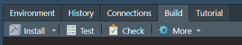

library(devtools)Loading required package: usethisNow you have an working environment correctly configured and we have taken a few moment to thing about our package aim. We can go deeper and initiate the structure of our new package from an active R session. You don’t have to take care about the configuration of your local session because the function associated will be create a clean new project for your package. First, load the devtools and by association is friend usethis.
library(devtools)Loading required package: usethisJust to be sure that you have everything you need to develop R package you can launch the following command line to display a report of the package development situation.
dev_sitrep()── R ───────────────────────────────────────────────────────────────────────────
• version: 4.5.2
• path: '/opt/R/4.5.2/lib/R/'
── devtools ────────────────────────────────────────────────────────────────────
• version: 2.4.6
── dev package ─────────────────────────────────────────────────────────────────
• package: <unset>
• path: <unset>✔ All checks passedIf everything rock’s, launch the next command to initiate the global architecture of your package. For the training, my new R package will have the acronym “macfly” for “My Anwesone paCkage For Learning with Yearning”.
create_package(path = path.expand("~/macfly"),
open = FALSE)✔ Creating '/home/runner/macfly/'.✔ Setting active project to "/home/runner/macfly".✔ Creating 'R/'.✔ Writing 'DESCRIPTION'.Package: macfly
Title: What the Package Does (One Line, Title Case)
Version: 0.0.0.9000
Authors@R (parsed):
* First Last <first.last@example.com> [aut, cre]
Description: What the package does (one paragraph).
License: `use_mit_license()`, `use_gpl3_license()` or friends to pick a
license
Encoding: UTF-8
Roxygen: list(markdown = TRUE)
RoxygenNote: 7.3.3✔ Writing 'NAMESPACE'.✔ Setting active project to "<no active project>".Another solution with RStudio is to use the interface through the file menu, New Project…, New Directory, R Package, file the field “Package name:”, click on “Open in new session” and finish with *Create Project”. Even is the approach is similar, the click-button interface create in addition a template function with a proposal for the documentation associated. In opposite, the command line creation include by default a .gitignore file (for Git use). It’s not true important but it could be a bit better to use the command line because we will learn how to create a R function template later and in your developer life it could be very rare (and dangerous) when you don’t use a Git associated to your work.
By default, RStudio open a fresh session associated to the R environment of your package and you should need to call again library(devtools).
For your information, you will find in the usethis package a function create_tidy_package() that extends create_package() by applying many of the tidyverse development conventions as possible. I don’t recommend using that way, instead of you know exactly what you do and to save time in the future, because it’s better to really understand each step of the package creation.
At least, you could see sometime a function call package.skeleton from the utils R package. Even if this function create a package structure it’s an “old way” to do and you should have some trouble if you use it, especially with you want to use the tidyverse philosophy.
If you follow the previous step, you should have the opening of a new RStudio session and the creation of a new directory on your local drive called just like your package name. Let take a moment that.
Inside the package directory, you should see 8 elements (the .Rhistory file is normally generated when you close for the first time in your RStudio session, but his generation depends on your personal configuration).
If you show a number or kinds of elements different than below without change anything in the command line below, maybe it’s because you don’t have to unlock the hidden files. In order to remedy you can go in the setting directory option (normaly and can access to that directely in any directory on Windows) and in the parameters apply the visiblity of hidden elements. In RStudio to see hidden files in the files panel, go to More (gear symbol) the tick Show Hidden Files.
In addition, if highly recommend displaying file extension in your file explorer (on Windows, it’s normally near the option for hidden elements). By default this display is hidden and could be a little bit strange when you activated it, but it’s very important to sensitize the user of what kind of file you will open. Furthermore, be aware the “clothes don’t make the man” and the extension is only a shortcut for the system to know how to deal with that but don’t make any guarantee of what you have inside. In accordance with rules of good practice (especially link to the security), take a moment to think about what you’re about to open and display the extension is a good first step to begging.
| Element name | Type |
|---|---|
| DESCRIPTION | file |
| NAMESPACE | file |
| R | directory |
If you take a look at the panel Build in the Rstudio environment you should see several new sections, like Install or Check (figure 1). We will take a look after in each of one, but keep in our mind that this sections is a shorcut way to apply processes on your package.

Figure 1: RStudio Build panel
In preparation for the documentation generation, the only thing to do now is to go to the Configure Build Tools options (click on More (gear symbol) and Configure Build Tools). In the Project Options menu, Build Tools section, click on the Configure button near Generate document with Roxygen. In the new windows, fill all the proposals. This process will create and update documentation automatically when you launch several packages processes. Sometimes, it may justify not filled all is if you have a really huge documentation or a specific rule for documentation generations.